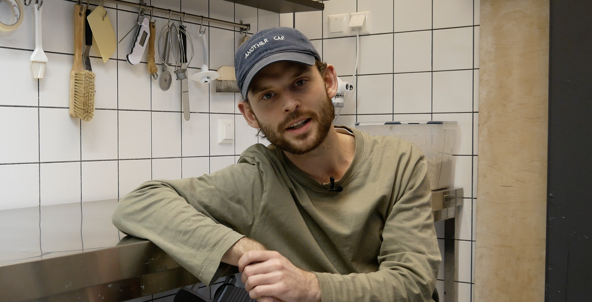
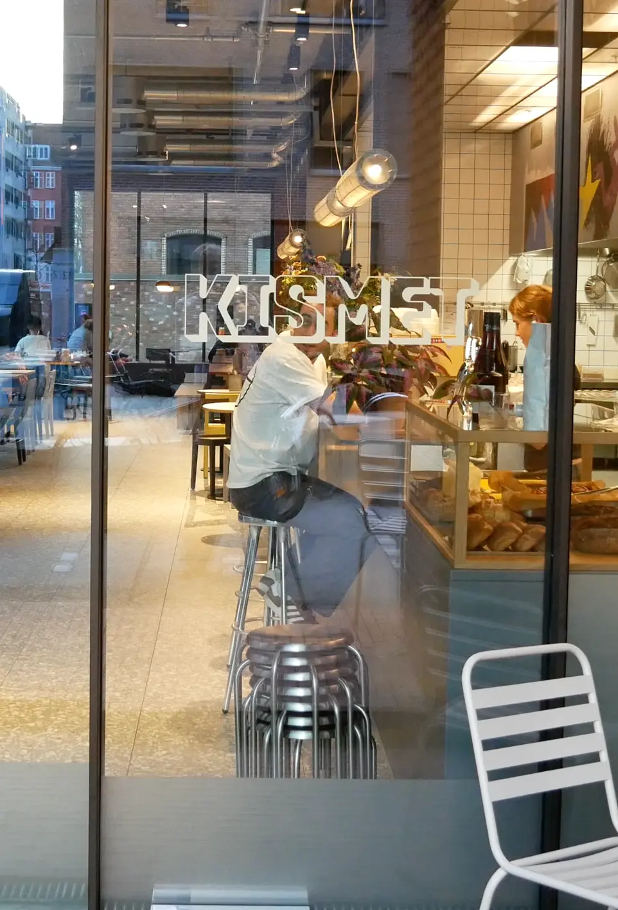
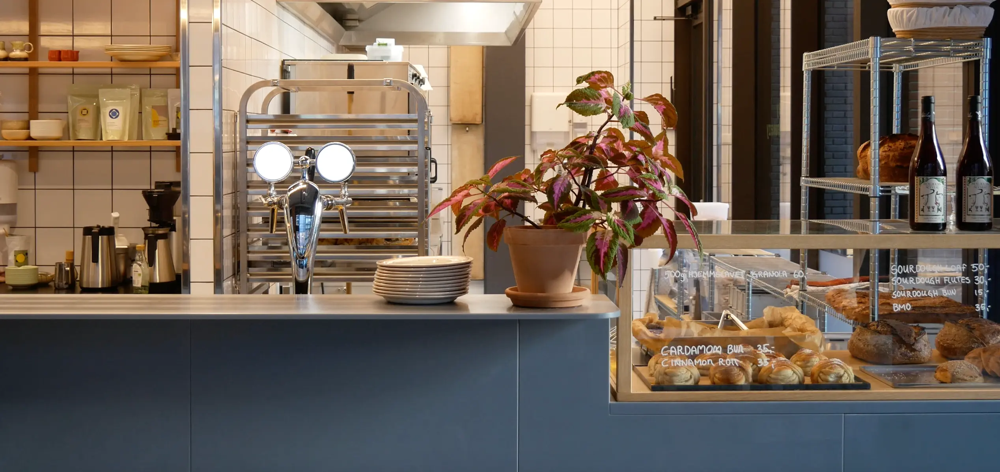
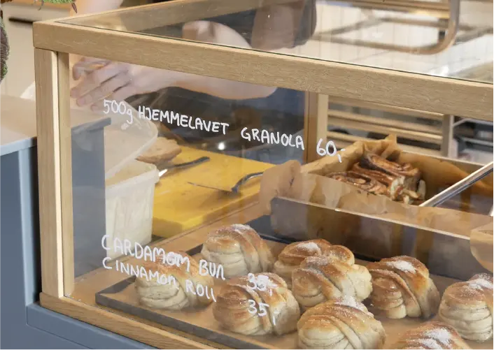
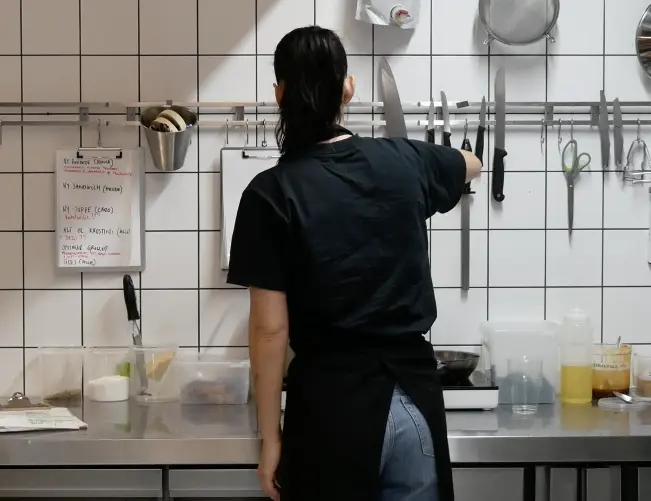
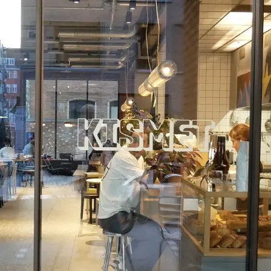
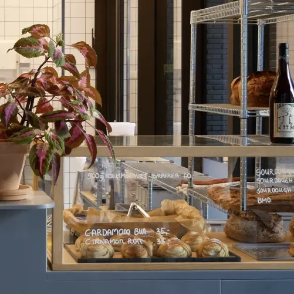
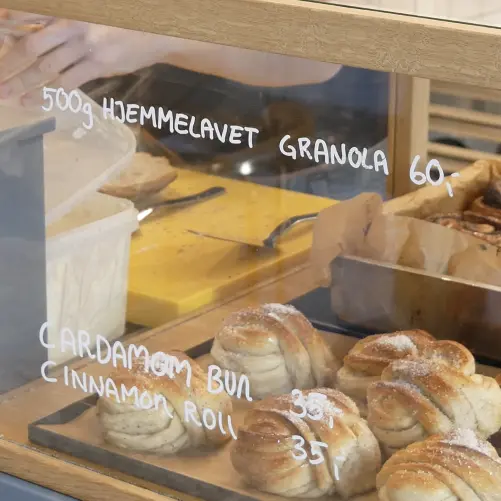
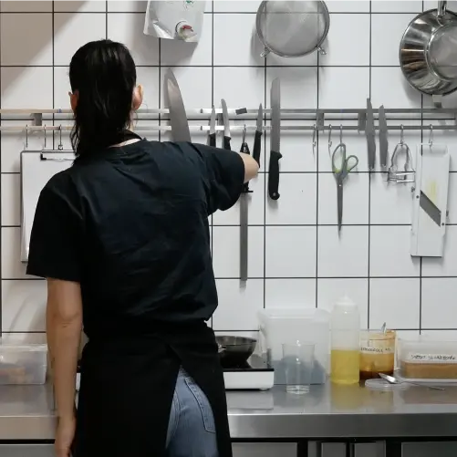

Passion for forretning
Peter
Velkommen til et inspirerende kig ind bag kulisserne på Københavns kaffekultur! Mød Peter, en passioneret 24-årig, som sammen med tre andre driver en unik kaffebar i hjertet af København.

Find interviewet
her!
Billeder fra kaffebaren







